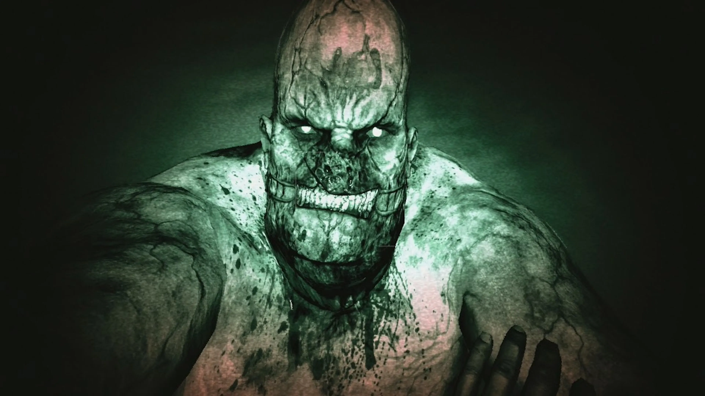

Juegas como Miles Upshur, un periodista de investigación que recibe un informe anónimo sobre experimentos inhumanos en el
Hospital Psiquiátrico Mount Massive, dirigido por la corporación Murkoff. Al entrar, descubre que los internos han tomado el
control del lugar y están completamente fuera de control.
CLP$ 10.500